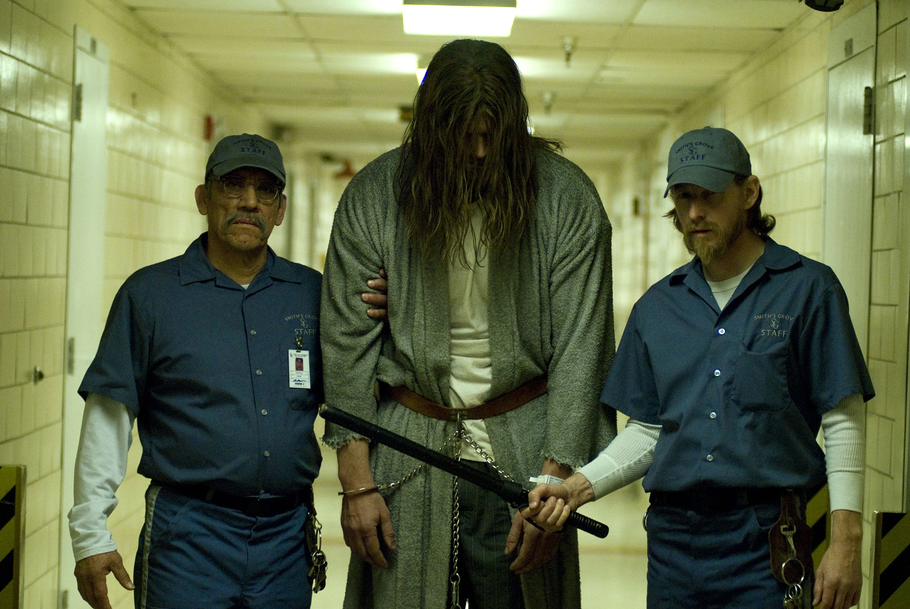

michael myers 2
Page Two index
The history of michael myers,As a child, Michael was admitted into a psychiatric
hospital for the murder of his older sister, Judith Myers. After 15 years of captivity,
Myers broke out of the asylum and started his killing spree, with the intention to murder
his way.Michael killed his sister Judith because of a curse that was placed on him. A weirdo
doctor thought it would be chill to cast this curse, even though it results in death and
chaos over a long course of time. Michael simply serves as a killing machine to keep the cult of thorn thriving.
